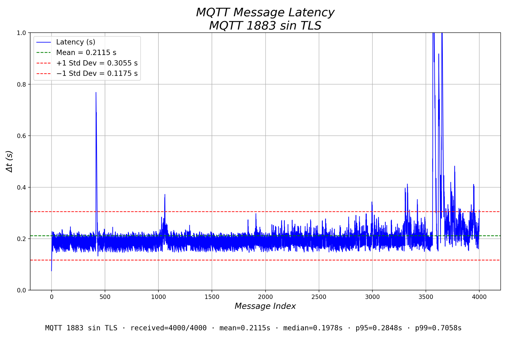
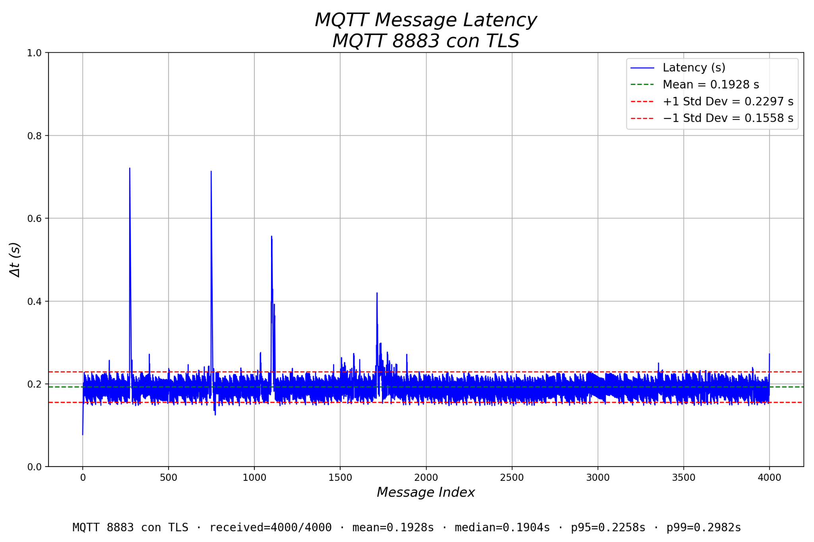
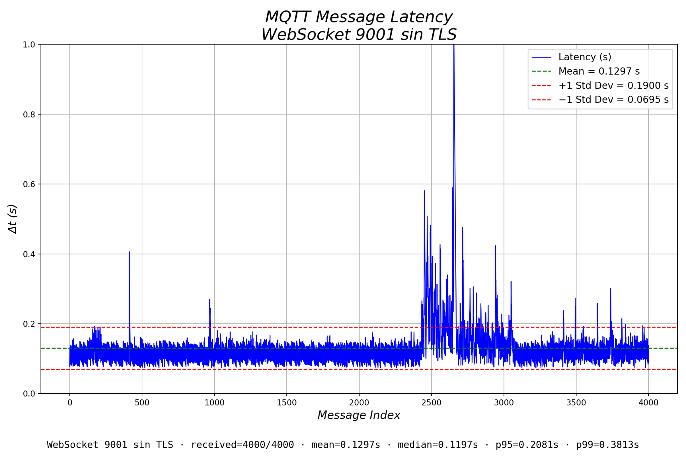
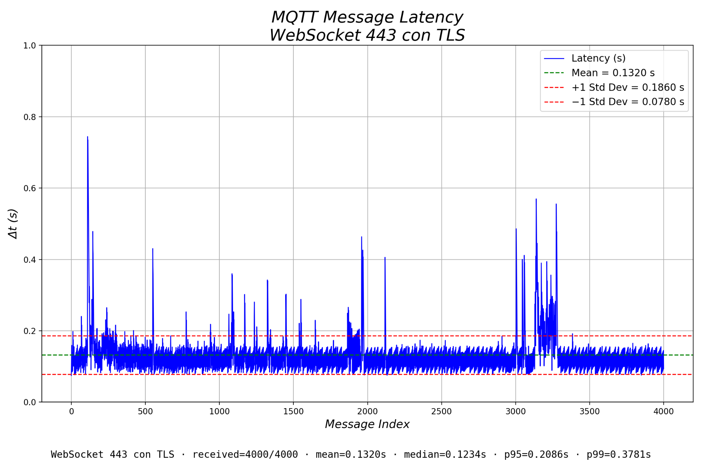

Endpoint recomendado
Para aplicaciones web, dashboards, páginas HTML con JavaScript y clientes modernos, el endpoint recomendado es WebSocket seguro sobre HTTPS.
wss://mqtt.mecatronica-ibero.mx/
Puertos y formas de conexión
| Puerto | Protocolo | Endpoint | Uso sugerido |
|---|---|---|---|
| 1883 | MQTT sin TLS | mqtt://mqtt.mecatronica-ibero.mx:1883 |
Aplicaciones existentes, ESP32 o pruebas que todavía no usan cifrado. |
| 8883 | MQTT con TLS | mqtts://mqtt.mecatronica-ibero.mx:8883 |
Python, backends, clientes MQTT nativos y robots con comunicación segura. |
| 9001 | WebSocket sin TLS interno — no expuesto públicamente | ws://mqtt.mecatronica-ibero.mx:9001/ |
Pruebas directas WebSocket sin pasar por Nginx. |
| 443 | WebSocket con TLS | wss://mqtt.mecatronica-ibero.mx/ |
Navegador, JavaScript, dashboards y aplicaciones web públicas. |
Acceso, usuarios y canales disponibles
Este broker puede funcionar con usuarios y contraseñas. Para actividades generales, los estudiantes pueden usar únicamente los tópicos públicos definidos por el profesor. Para proyectos especiales, robots físicos, planeadores, backends o integraciones con sistemas reales, se asignarán usuarios y canales específicos.
El canal sugerido para pruebas abiertas es public/#. Por ejemplo:
public/test, public/demo/equipo1 o public/clase/sensores.
Los usuarios autorizados pueden recibir un canal propio, por ejemplo:
users/usuario/#, cursos/clave/equipo/# o proyectos/nombre/#.
No publiques en tópicos de robots, planeadores o infraestructura si no se te asignaron explícitamente.
Ejemplos restringidos: huber/robot/#, huber/R1/#, huber/R2/#.
Usa nombres claros, evita publicar mensajes en bucle sin control, no envíes imágenes o archivos pesados sin autorización y no compartas credenciales.
Para solicitar un usuario, contraseña o canal dedicado para un proyecto, escribe a huber.giron@ibero.mx indicando nombre, curso/proyecto, propósito del canal y tipo de aplicación a conectar.
Política sugerida de tópicos
| Tipo de uso | Tópico sugerido | Permiso esperado |
|---|---|---|
| Pruebas generales | public/# |
Lectura y publicación para demos o prácticas abiertas. |
| Usuario individual | users/<usuario>/# |
Lectura y publicación solo para el usuario asignado. |
| Equipo de clase | cursos/<clave>/equipo<n>/# |
Lectura y publicación para el equipo autorizado. |
| Proyecto especial | proyectos/<nombre>/# |
Lectura y publicación para los participantes del proyecto. |
| Robots o infraestructura | huber/robot/#, huber/R1/# |
Restringido a usuarios autorizados. |
Resultados de latencia del broker
Se realizó una prueba de 4000 mensajes por modo de conexión, midiendo la latencia extremo a extremo observada por el cliente: tiempo de publicación → broker → recepción del mensaje.
wss://mqtt.mecatronica-ibero.mx/.
| Modo | Mensajes | Media | Mediana | P95 | P99 | Lectura rápida |
|---|---|---|---|---|---|---|
| MQTT 1883 sin TLS | 4000/4000 | 0.2115 s | 0.1978 s | 0.2848 s | 0.7058 s | Mayor variabilidad y picos tardíos; útil para compatibilidad, no como opción principal. |
| MQTT 8883 con TLS | 4000/4000 | 0.1928 s | 0.1904 s | 0.2258 s | 0.2982 s | Mejor estabilidad que 1883; buena opción para clientes MQTT nativos seguros. |
| WebSocket 9001 sin TLS interno — no expuesto públicamente | 4000/4000 | 0.1297 s | 0.1197 s | 0.2081 s | 0.3813 s | Menor media, pero sin cifrado; útil para pruebas o redes controladas. |
| WebSocket 443 con TLS | 4000/4000 | 0.1320 s | 0.1234 s | 0.2086 s | 0.3781 s | Rendimiento muy cercano a WS 9001, pero con TLS y acceso web estándar. |




Prueba rápida desde esta página
Este probador usa MQTT.js desde el navegador y se conecta por wss://mqtt.mecatronica-ibero.mx/.
Puede conectarse con usuario y contraseña, o sin credenciales si el broker tiene habilitado el acceso anónimo
para tópicos públicos como public/#. No guarda las credenciales; solo las usa en esta sesión del navegador.
Úsalo solo para tópicos públicos, por ejemplo public/test.
Log
Ejemplos HTML + JavaScript
Antes de elegir ejemplo: conexión con o sin credenciales
Si el broker requiere usuario y contraseña, incluye username y password.
Si el broker permite acceso anónimo para public/#, omite ambos campos.
const options = {
username: "USUARIO",
password: "PASSWORD",
clientId: "browser-" + Math.random().toString(16).substring(2),
reconnectPeriod: 2000,
connectTimeout: 8000
};const options = {
clientId: "browser-public-" + Math.random().toString(16).substring(2),
reconnectPeriod: 2000,
connectTimeout: 8000
};1. Navegador por WSS, puerto 443
Este es el ejemplo recomendado para páginas web.
<script src="https://unpkg.com/mqtt/dist/mqtt.min.js"></script>
<script>
// Opción A: con usuario y contraseña
const options = {
username: "USUARIO",
password: "PASSWORD",
clientId: "browser-" + Math.random().toString(16).substring(2),
reconnectPeriod: 2000,
connectTimeout: 8000
};
// Opción B: sin usuario ni contraseña, solo si el broker permite acceso anónimo
// const options = {
// clientId: "browser-public-" + Math.random().toString(16).substring(2),
// reconnectPeriod: 2000,
// connectTimeout: 8000
// };
const client = mqtt.connect("wss://mqtt.mecatronica-ibero.mx/", options);
client.on("connect", () => {
console.log("Conectado por WSS 443");
client.subscribe("public/test");
client.publish("public/test", "Hola desde navegador por WSS 443");
});
client.on("message", (topic, message) => {
console.log(topic, message.toString());
});
client.on("error", (err) => {
console.error("Error MQTT:", err.message);
});
</script>2. Navegador por WS, puerto 9001 interno — no expuesto públicamente
Útil para pruebas directas sin TLS. No es recomendable para una página pública en producción.
<script src="https://unpkg.com/mqtt/dist/mqtt.min.js"></script>
<script>
// Con usuario y contraseña
const options = {
username: "USUARIO",
password: "PASSWORD",
clientId: "browser-ws-" + Math.random().toString(16).substring(2)
};
// Sin usuario ni contraseña, solo para acceso anónimo permitido
// const options = {
// clientId: "browser-ws-public-" + Math.random().toString(16).substring(2)
// };
const client = mqtt.connect("ws://mqtt.mecatronica-ibero.mx:9001/", options);
client.on("connect", () => {
console.log("Conectado por WS 9001");
client.subscribe("public/test");
client.publish("public/test", "Hola desde navegador por WS 9001");
});
client.on("message", (topic, message) => {
console.log(topic, message.toString());
});
</script>Ejemplos Python
Antes de elegir ejemplo: con o sin credenciales
En Python con Paho MQTT, la diferencia es simple: si tienes usuario y contraseña, llama
if USE_AUTH:
client.username_pw_set(USERNAME, PASSWORD). Si el broker permite acceso anónimo, no llames esa función.
USERNAME = "USUARIO"
PASSWORD = "PASSWORD"
client = mqtt.Client(client_id="cliente-con-usuario")
client.username_pw_set(USERNAME, PASSWORD)client = mqtt.Client(client_id="cliente-publico")
# No usar client.username_pw_set(...)
# Usar solamente tópicos públicos, por ejemplo public/test1. Python por MQTT sin TLS, puerto 1883
import paho.mqtt.client as mqtt
BROKER = "mqtt.mecatronica-ibero.mx"
PORT = 1883
USERNAME = "USUARIO"
PASSWORD = "PASSWORD"
USE_AUTH = True # Cambiar a False si usarás acceso anónimo
TOPIC = "public/test"
def on_connect(client, userdata, flags, rc):
print("Conectado:", rc)
client.subscribe(TOPIC)
client.publish(TOPIC, "Hola desde Python por 1883")
def on_message(client, userdata, msg):
print(msg.topic, "->", msg.payload.decode())
client = mqtt.Client(client_id="python-1883-test")
if USE_AUTH:
client.username_pw_set(USERNAME, PASSWORD)
client.on_connect = on_connect
client.on_message = on_message
client.connect(BROKER, PORT, 60)
client.loop_forever()2. Python por MQTT con TLS, puerto 8883
import ssl
import paho.mqtt.client as mqtt
BROKER = "mqtt.mecatronica-ibero.mx"
PORT = 8883
USERNAME = "USUARIO"
PASSWORD = "PASSWORD"
USE_AUTH = True # Cambiar a False si usarás acceso anónimo
TOPIC = "public/test"
def on_connect(client, userdata, flags, rc):
print("Conectado:", rc)
client.subscribe(TOPIC)
client.publish(TOPIC, "Hola desde Python por 8883 TLS")
def on_message(client, userdata, msg):
print(msg.topic, "->", msg.payload.decode())
client = mqtt.Client(client_id="python-8883-test")
if USE_AUTH:
client.username_pw_set(USERNAME, PASSWORD)
client.tls_set(cert_reqs=ssl.CERT_REQUIRED)
client.on_connect = on_connect
client.on_message = on_message
client.connect(BROKER, PORT, 60)
client.loop_forever()3. Python por WebSocket seguro, puerto 443
import ssl
import paho.mqtt.client as mqtt
BROKER = "mqtt.mecatronica-ibero.mx"
PORT = 443
USERNAME = "USUARIO"
PASSWORD = "PASSWORD"
USE_AUTH = True # Cambiar a False si usarás acceso anónimo
TOPIC = "public/test"
def on_connect(client, userdata, flags, rc):
print("Conectado:", rc)
client.subscribe(TOPIC)
client.publish(TOPIC, "Hola desde Python por WSS 443")
def on_message(client, userdata, msg):
print(msg.topic, "->", msg.payload.decode())
client = mqtt.Client(
client_id="python-wss-test",
transport="websockets"
)
if USE_AUTH:
client.username_pw_set(USERNAME, PASSWORD)
client.ws_set_options(path="/")
client.tls_set(cert_reqs=ssl.CERT_REQUIRED)
client.on_connect = on_connect
client.on_message = on_message
client.connect(BROKER, PORT, 60)
client.loop_forever()4. Python por WebSocket sin TLS, puerto 9001
import paho.mqtt.client as mqtt
BROKER = "mqtt.mecatronica-ibero.mx"
PORT = 9001
USERNAME = "USUARIO"
PASSWORD = "PASSWORD"
USE_AUTH = True # Cambiar a False si usarás acceso anónimo
TOPIC = "public/test"
def on_connect(client, userdata, flags, rc):
print("Conectado:", rc)
client.subscribe(TOPIC)
client.publish(TOPIC, "Hola desde Python por WS 9001")
def on_message(client, userdata, msg):
print(msg.topic, "->", msg.payload.decode())
client = mqtt.Client(
client_id="python-ws-test",
transport="websockets"
)
if USE_AUTH:
client.username_pw_set(USERNAME, PASSWORD)
client.ws_set_options(path="/")
client.on_connect = on_connect
client.on_message = on_message
client.connect(BROKER, PORT, 60)
client.loop_forever()Configuración de usuarios, contraseñas y permisos
Esta sección es para administración del broker. Mosquitto puede controlar el acceso con un archivo de contraseñas y un archivo ACL, donde se define qué tópicos puede leer o publicar cada usuario.
1. Configuración base de Mosquitto con usuarios y ACL
Archivo sugerido: /etc/mosquitto/conf.d/mecatronica.conf
allow_anonymous true
password_file /etc/mosquitto/passwd
acl_file /etc/mosquitto/acl
# MQTT sin TLS
listener 1883 0.0.0.0
protocol mqtt
# WebSocket sin TLS
listener 9001 0.0.0.0
protocol websockets
# MQTT con TLS
listener 8883 0.0.0.0
protocol mqtt
certfile /etc/mosquitto/certs/fullchain.pem
keyfile /etc/mosquitto/certs/privkey.pemallow_anonymous true está activo, cualquier persona podría conectarse sin usuario. Por eso es
indispensable usar acl_file para limitar el acceso anónimo a tópicos como public/#.
2. Crear el archivo ACL
sudo nano /etc/mosquitto/aclEjemplo de ACL para acceso público controlado y usuarios especiales:
# Acceso anónimo: solo zona pública
topic readwrite public/#
# Administrador general
user huber
topic readwrite #
# Usuario para frontend web
user frontend
topic readwrite public/#
topic readwrite cursos/#
topic read huber/robot/plan/status
topic read huber/robot/goal
# Usuario para planner LLM → Robot
user planner
topic readwrite huber/robot/#
topic read public/#
topic read cursos/#
# Robot 1
user robot1
topic readwrite huber/R1/#
# Equipo de estudiantes
user equipo1
topic readwrite cursos/cps/equipo1/#
topic readwrite public/#
user equipo2
topic readwrite cursos/cps/equipo2/#
topic readwrite public/#
# Proyecto especial
user proyecto_demo
topic readwrite proyectos/demo/#3. Crear usuarios con contraseña
Usa -c solamente si todavía no existe el archivo /etc/mosquitto/passwd:
sudo mosquitto_passwd -c /etc/mosquitto/passwd huberPara agregar usuarios adicionales, no uses -c:
sudo mosquitto_passwd /etc/mosquitto/passwd frontend
sudo mosquitto_passwd /etc/mosquitto/passwd planner
sudo mosquitto_passwd /etc/mosquitto/passwd robot14. Permisos de archivos y reinicio
sudo chown root:mosquitto /etc/mosquitto/passwd
sudo chmod 640 /etc/mosquitto/passwd
sudo chown root:mosquitto /etc/mosquitto/acl
sudo chmod 640 /etc/mosquitto/acl
sudo systemctl restart mosquitto
sudo systemctl status mosquitto --no-pager -l5. Probar acceso público y restringido
Prueba pública sin usuario:
mosquitto_pub -h mqtt.mecatronica-ibero.mx -p 1883 -t "public/test" -m "hola público"Un usuario sin permisos no puede publicar en canales restringidos como huber/R1/cmd.
Configuración en MQTT Explorer
Protocol: ws://
Host: mqtt.mecatronica-ibero.mx
Port: 443
Basepath: /
Encryption TLS: ON
Validate certificate: ON
Protocol: mqtt://
Host: mqtt.mecatronica-ibero.mx
Port: 1883
Encryption TLS: OFF
Validate certificate: OFF
Protocol: mqtt://
Host: mqtt.mecatronica-ibero.mx
Port: 8883
Encryption TLS: ON
Validate certificate: ON
Protocol: ws://
Host: mqtt.mecatronica-ibero.mx
Port: 9001
Basepath: /
Encryption TLS: OFF
Validate certificate: OFF